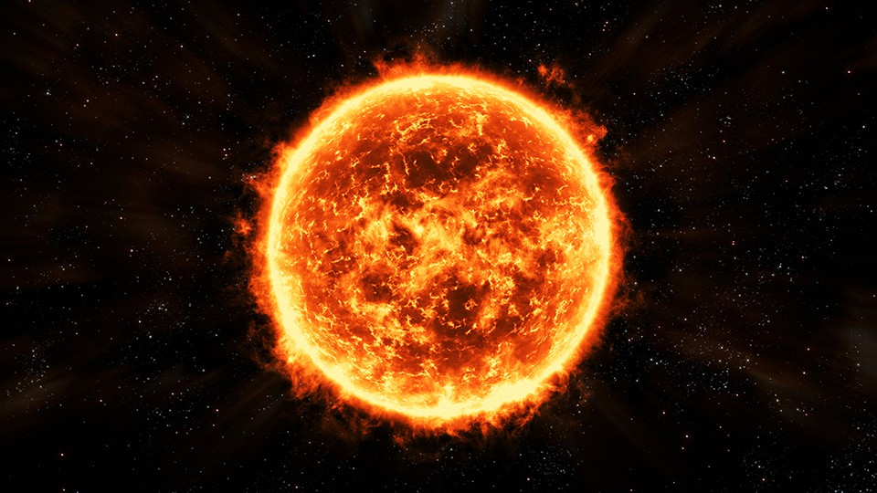

SUN

The Sun is a yellow dwarf star, a hot ball of glowing gases at the heart
of our solar system. Its gravity holds the solar system together, keeping
everything – from the biggest planets to the smallest particles of debris –
in its orbit. The connection and interactions between the Sun and Earth drive
the seasons, ocean currents, weather, climate, radiation belts and auroras.
Though it is special to us, there are billions of stars like our Sun scattered
across the Milky Way galaxy.
The Sun has many names in many cultures. The Latin word for Sun is “sol,”
which is the main adjective for all things Sun-related: solar.
Size and Distance
With a radius of 432,168.6 miles (695,508 kilometers), our Sun is not an
especially large star—many are several times bigger—but it is still far more
massive than our home planet: 332,946 Earths match the mass of the Sun. The Sun’s
volume would need 1.3 million Earths to fill it.
The Sun is 93 million miles (150 million kilometers) from Earth. Its nearest
stellar neighbor is the Alpha Centauri triple star system: Proxima Centauri is
4.24 light years away, and Alpha Centauri A and B—two stars orbiting each
other—are 4.37 light years away. A light year is the distance light travels
in one year, which is equal to 5,878,499,810,000 miles or 9,460,528,400,000 kilometers.
Orbit and Rotation
The Sun, and everything that orbits it, is located in the Milky Way galaxy.
More specifically, our Sun is in a spiral arm called the Orion Spur that
extends outward from the Sagittarius arm. From there, the Sun orbits the
center of the Milky Way Galaxy, bringing the planets, asteroids, comets and
other objects along with it. Our solar system is moving with an average velocity
of 450,000 miles per hour (720,000 kilometers per hour). But even at this speed,
it takes us about 230 million years to make one complete orbit around the Milky
Way.The Sun rotates as it orbits the center of the Milky Way. Its spin has an
axial tilt of 7.25 degrees with respect to the plane of the planets’ orbits.
Since the Sun is not a solid body, different parts of the Sun rotate at different
rates. At the equator, the Sun spins around once about every 25 days, but at its
poles the Sun rotates once on its axis every 36 Earth days.
Formation
The Sun and the rest of the solar system formed from a giant, rotating cloud of
gas and dust called a solar nebula about 4.5 billion years ago. As the nebula
collapsed because of its overwhelming gravity, it spun faster and flattened into
a disk. Most of the material was pulled toward the center to form our Sun, which
accounts for 99.8% of the mass of the entire solar system.Like all stars, the Sun
will someday run out of energy. When the Sun starts to die, it will swell so big
that it will engulf Mercury and Venus and maybe even Earth. Scientists predict
the Sun is a little less than halfway through its lifetime and will last another
6.5 billion years before it shrinks down to be a white dwarf.